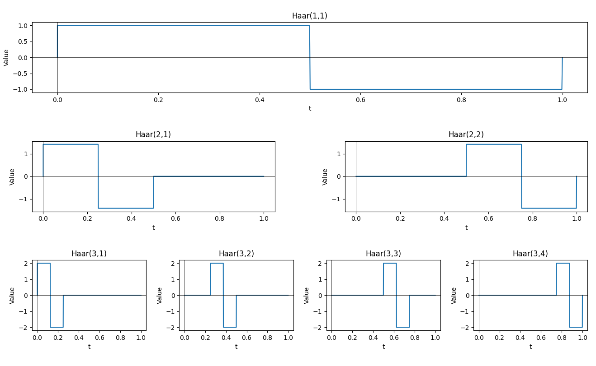
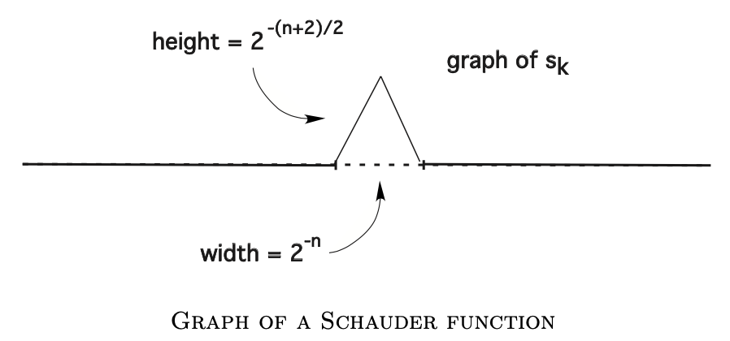

[Evans Intro SDE]2·Brownian Motion
参考书籍：An Introduction to Stochastic Differential Equations Version 1.2 by Lawrence C. Evans. link
动机与定义
墨水粒子的扩散
考虑一条装满水的细长试管，在 \(t=0\) 时刻向 \(x=0\) 处滴入一滴墨水。设 \(f(x,t)\) 表示 \(t\) 时刻 \(x\) 位置处墨水粒子的密度，则 0 时刻有： \[ f(x,0)=\delta_0,\text{ the unit mass at 0.} \] 又设在一段小时间 \(\tau\) 内，墨水粒子从 \(x-y\) 位置移动到 \(x\) 位置的概率为 \(\rho(\tau,y)\)，那么： \[ f(x,t+\tau)=\int_{-\infty}^{\infty}f(x-y,t)\rho(\tau,y)\mathrm dy=\int_{-\infty}^{\infty}\left(f-f_xy+\frac{1}{2}f_{xx}y^2+\cdots\right)\rho(\tau,y)\mathrm dy \] 由于 \(\rho\) 是概率分布，故 \(\int_{-\infty}^{\infty}\rho\mathrm dy=1\)；又由于 \(\rho(\tau,y)=\rho(\tau,-y)\)，所以 \(\int_{-\infty}^{\infty}y\rho\mathrm dy=0\). 进一步地，假设 \(\int_{-\infty}^{\infty}y^2\rho\mathrm dy\)，即 \(y\) 的方差，与 \(\tau\) 成线性关系，即： \[ \int_{-\infty}^{\infty}y^2\rho\mathrm dy=D\tau,\quad D>0 \] 其中 \(D\) 为常数，那么有： \[ f(x,t+\tau)=f(x,t)+\frac{1}{2}f_{xx}(x,t)D\tau+\cdots\implies\frac{f(x,t+\tau)-f(x,t)}{\tau}=\frac{1}{2}f_{xx}(x,t)D \] 令 \(\tau\to0\)，得： \[ f_t=\frac{D}{2}f_{xx}\quad\text{or}\quad\frac{\partial f}{\partial t}=\frac{D}{2}\frac{\partial^2f}{\partial x^2} \] 这个偏微分方程就是扩散方程 (diffusion equation) 或热方程 (heat equation)。给定初值条件 \(f(x,0)=\delta_0\)，该 PDE 的解为： \[ f(x,t)=\frac{1}{(2\pi Dt)^{1/2}}e^{-\frac{x^2}{2Dt}} \] 也就是说时刻 \(t\) 各位置墨水粒子密度的分布服从 \(\mathcal N(0,Dt)\).
随机游走
设有一粒子在直线上随机游走。\(t=0\) 时粒子位于 \(x=0\) 处，每隔 \(\Delta t\) 时间以 \(1/2\) 的概率向左移动 \(\Delta x\) 距离，以 \(1/2\) 的概率向右移动 \(\Delta x\) 距离。设 \(p(m,n)\) 表示粒子在 \(n\Delta t\) 时刻位于 \(m\Delta x\) 处的概率，\(m=0,\pm1,\pm2,\ldots\)，\(n=0,1,2,\ldots\)，那么： \[ p(m,0)=\begin{cases}0&m\neq 0\\1&m=0\end{cases} \] 并且： \[ p(m,n+1)=\frac{1}{2}p(m-1,n)+\frac{1}{2}p(m+1,n) \] 于是： \[ p(m,n+1)-p(m,n)=\frac{1}{2}(p(m-1,n)-2p(m,n)+p(m+1,n)) \] 假设 \((\Delta x)^2\) 与 \(\Delta t\) 之间有线性关系： \[ \frac{(\Delta x)^2}{\Delta t}=D \] 其中 \(D\) 为常数。那么有： \[ \frac{p(m,n+1)-p(m,n)}{\Delta t}=\frac{D}{2}\cdot\frac{p(m-1,n)-2p(m,n)+p(m+1,n)}{(\Delta x)^2} \] 令 \(\Delta t\to0,\Delta x\to0,\,m\Delta x\to x,\,n\Delta t\to t\)，这意味着 \(p(m,n)\to f(x,t)\)，表示粒子在 \(t\) 时刻位于 \(x\) 处的概率密度。那么上述方程变成： \[ f_t=\frac{D}{2}f_{xx}\quad\text{or}\quad\frac{\partial f}{\partial t}=\frac{D}{2}\frac{\partial^2f}{\partial x^2} \] 我们再次得到了扩散方程。
布朗运动（维纳过程）
基于上述两例的启发，取 \(D=1\)，我们定义布朗运动（维纳过程）如下。
定义：若一个实值随机过程 \(W(\cdot)\) 满足：
- \(W(0)=0\), almost surely.
- 增量高斯：随机变量 \(W(t)-W(s)\) 服从 \(\mathcal N(0,t-s)\)，\(\forall\ t\geq s\geq0\).
- 增量独立：对任意 \(0<t_1<t_2<\cdots<t_n\)，随机变量 \(W(t_1),W(t_2)-W(t_1),\cdots,W(t_n)-W(t_{n-1})\) 独立。
则称该随机过程为布朗运动或维纳过程。
容易知道，布朗运动的均值函数和方差函数分别为： \[ \mathbb E[W(t)]=0,\quad \text{Var}(W(t))=\mathbb E[W^2(t)]=t,\quad \forall\ t\geq0 \] 设 \(t\geq s\geq 0\)，则布朗运动的自相关函数为：
\[ \begin{align} R_W(t,s)&=\mathbb E[W(t)W(s)]\\ &=\mathbb E[(W(s)+W(t)-W(s))W(s)]\\ &=\mathbb E[W^2(s)]+\mathbb E[(W(t)-W(s))W(s)]\\ &=\mathbb E[W^2(s)]+\mathbb E[W(t)-W(s)]\mathbb E[W(s)]\\ &=s \end{align} \] 即对于任意 \(t,s\geq0\)，有： \[ R_W(t,s)=\mathbb E[W(t)W(s)]=\min(s,t),\quad t,s\geq 0 \]
构造布朗运动
有限维分布
一个随机过程的统计特性由其有限维分布决定，因此我们希望计算维纳过程的有限维分布。
根据定义，如果 \(W(\cdot)\) 是一个维纳过程，那么对于任意 \(t>0\) 和 \(a\leq b\)，有： \[ P(a\leq W(t)\leq b)=\frac{1}{\sqrt{2\pi t}}\int_a^be^{-\frac{x^2}{2t}}\mathrm dx=\int_a^b g(x,t\vert 0)\mathrm dx \] 其中为书写方便起见，记： \[ g(x,t\vert y)=\frac{1}{\sqrt{2\pi t}}e^{-\frac{(x-y)^2}{2t}} \] 进一步地，对于 \(0<t_1<t_2\) 和 \(a_1\leq b_1,a_2\leq b_2\)，有： \[ \begin{align} P(a_1\leq W(t_1)\leq b_1,a_2\leq W(t_2)\leq b_2)&=\int_{a_1}^{b_1}\int_{a_2}^{b_2}P(W(t_1)=x_1)P(W(t_2)=x_2\vert W(t_1)=x_1)\mathrm dx_2\mathrm dx_1\\ &=\int_{a_1}^{b_1}\int_{a_2}^{b_2}P(W(t_1)=x_1)P(W(t_2)-W(t_1)=x_2-x_1)\mathrm dx_2\mathrm dx_1\\ &=\int_{a_1}^{b_1}\int_{a_2}^{b_2}g(x_1,t_1\vert 0)g(x_2,t_2-t_1\vert x_1)\mathrm dx_2\mathrm dx_1 \end{align} \] 其中第二个等号运用了增量独立性。以此类推，任取整数 \(n>0\) 和时间步 \(0=t_0<t_1<\ldots<t_n\) 以及 \(a_i\leq b_i,\,i=1,\ldots,n\)，有： \[ P(a_1\leq W(t_1)\leq b,\ldots,a_n\leq W(t_n)\leq b_n)= \int_{a_1}^{b_1}\cdots\int_{a_n}^{b_n}g(x_1,t_1\vert0)g(x_2,t_2-t_1\vert x_1)\cdots g(x_n,t_n-t_{n-1}\vert x_{n-1})\mathrm dx_n\cdots\mathrm dx_1 \] 下述定理推广了这一结论。
定理：设 \(W(\cdot)\) 是一个一维维纳过程，任取整数 \(n>0\) 和时间步 \(0=t_0<t_1<\ldots<t_n\)，设函数 \(f:\mathbb R^n\to\mathbb R\)，则有： \[ \mathbb E\left[f(W(t_1),\ldots,W(t_n))\right]=\int_{-\infty}^{\infty}\cdots\int_{-\infty}^{\infty}f(x_1,\ldots,x_n)g(x_1,t_1\vert 0)g(x_2,t_2-t_1\vert x_1)\cdots g(x_n,t_n-t_{n-1}\vert x_{n-1})\mathrm dx_n\cdots\mathrm dx_1 \]
白噪声
在第一章中我们称维纳过程的导数过程为“白噪声”： \[ \xi(t)=\dot W(t) \] 我们随后会看到，\(W(t)\) 的均方导数其实是不存在的，但是在形式上，我们仍然可以计算 \(\xi(t)\) 的均值函数和自相关函数： \[ \begin{gather} \mathbb E[\xi(t)]=\frac{\mathrm d}{\mathrm dt}\mathbb E[W(t)]=0\\ R_\xi(t,s)=\mathbb E[\xi(t)\xi(s)]=\frac{\partial^2}{\partial t\partial s}\mathbb E[W(t)W(s)]=\frac{\partial^2}{\partial t\partial s}\min(t,s)=\delta(t-s) \end{gather} \] 可以看见，\(\xi(t)\) 的均值函数是常数，并且自相关函数只与时间差有关，即： \[ R_\xi(t,s)=R_\xi(\tau)=\delta(\tau),\quad\tau=t-s \] 因此 \(\xi(t)\) 是一个宽平稳过程。进一步地，根据维纳-辛钦定理，对自相关函数做傅立叶变换可以计算 \(\xi(t)\) 的功率谱密度函数： \[ S_\xi(\omega)=\int_{-\infty}^{\infty}e^{-i\omega\tau}\delta(\tau)\mathrm d\tau=1,\quad \forall\omega \] 也就是说，任意频率对自相关函数都有相同的贡献，因此我们称 \(\xi(t)\) 为白噪声。
正交基
设 \(L^2(0,1)\) 表示所有定义在 \((0,1)\) 上的实值平方可积函数构成的函数空间。设 \(\{\psi_n(t)\}_{n=0}^\infty\) 是 \(L^2(0,1)\) 上的一组正交基，那么根据正交性有： \[ \int_0^1\psi_n(s)\psi_m(s)\mathrm ds=\delta_{mn}=\begin{cases}0,&n\neq m\\1,&n=m\end{cases},\quad n,m=0,1,\ldots \] 将白噪声 \(\xi(t)\) 分解为该基的线性组合： \[ \xi(t)=\sum_{n=0}^\infty A_n\psi_n(t),\quad 0\leq t\leq 1 \] 其中系数 \(A_n\) 都是随机变量。上式两边同乘 \(\psi_m(t)\) 并积分，容易知道： \[ A_n=\int_0^1\xi(t)\psi_n(t)\mathrm dt,\quad n=0,1,\ldots \] 由于高斯分布比较简单，我们希望「\(A_n\) 是独立的零均值高斯随机变量」。如果该假设成立，那么应有 \(\mathbb E[A_nA_m]=\delta_{mn}\)，而事实也确实如此： \[ \begin{align} \mathbb E[A_nA_m]&=\int_0^1\int_0^1\mathbb E[\xi(t)\xi(s)]\psi_n(t)\psi_m(s)\mathrm dt\mathrm ds\\ &=\int_0^1\int_0^1\delta(t-s)\psi_n(t)\psi_m(s)\mathrm dt\mathrm ds\\ &=\int_0^1\psi_n(s)\psi_m(s)\mathrm ds=\delta_{mn} \end{align} \] 因此我们确实可以期待「\(A_n\) 是独立的零均值高斯随机变量」，下面我们需要找一个特殊的基 \(\{\psi_n(t)\}_{n=0}^{\infty}\) 使之成立。
Lévy–Ciesielski 构造
定义：Haar 小波函数是 \([0,1]\) 上的一族函数 \(\{h_k(t)\}_{k=0}^\infty\)，其定义如下： \[ \begin{align} h_0(t)&=1,\quad 0\leq t\leq 1&&k=0\\ h_1(t)&=\begin{cases}1,&0\leq t\leq \frac{1}{2}\\-1,&\frac{1}{2}<t\leq 1\end{cases}&&k=1\\ h_k(t)&=\begin{cases}2^{n/2},&\frac{k-2^n}{2^n}\leq t\leq \frac{k-2^n+1/2}{2^n}\\-2^{n/2},&\frac{k-2^n+1/2}{2^n}<t\leq \frac{k-2^n+1}{2^n}\\0,&\text{otherwise}\end{cases}&&2^n\leq k<2^{n+1},\,n=1,2,\ldots\\ \end{align} \] 看着有点唬人，但画出来还是挺直观的（注释：子图标题是 \(\text{Haar}(n+1,k-2^n+1)\)）：

引理：Haar 小波函数族 \(\{h_k(t)\}_{k=0}^{\infty}\) 构成了 \(L^2(0,1)\) 空间上的一组完备的正交基。
定义：对 \(k=0,1,\ldots\)，称下式为第 \(k\) 个 Schauder 函数： \[ s_k(t)=\int_0^th_k(s)\mathrm ds \] Schauder 函数 \(s_k(t)\) 的图像是区间 \([\frac{k-2^n}{2^n},\frac{k-2^n+1}{2^n}]\) 上的一个三角形，最大值为 \(2^{-n/2-1}\)，其可视化如下：

对于 Schauder 函数，假设 \(s\leq t\)，则有以下计算： \[ \begin{align} \sum_{k=0}^{\infty}s_k(t)s_k(s)&=\sum_{k=0}^{\infty}\left(\int_0^th_k(u)\mathrm du\right)\left(\int_0^sh_k(v)\mathrm dv\right)\\ &=\sum_{k=0}^{\infty}\int_0^t\int_0^sh_k(u)h_k(v)\mathrm dv\mathrm du\\ &= \end{align} \]
现在，基于 Schauder 函数，我们就可以将维纳过程 \(W(t)\) 分解为 \(s_k(t)\) 的线性组合，并且系数就是我们希望的「独立的零均值高斯随机变量」。
定理：设 \(\{A_k\}_{k=0}^{\infty}\) 是一列独立服从 \(\mathcal N(0,1)\) 的随机变量，则级数： \[ W(t)=\sum_{k=0}^\infty A_ks_k(t),\quad 0\leq t\leq 1 \] 在各个 \(t\) 处一致收敛，并且 \(W(t)\) 是一个维纳过程，且采样路径 \(t\mapsto W(t)\) 是连续的。
这里我们跳过收敛性的证明，只说明 \(W(t)\) 是一个维纳过程。首先，\(W(0)=0\) 是显然的；其次，我们需要说明 \(W(t)-W(s)\) 服从 \(\mathcal N(0,t-s)\)，考虑特征函数： \[ \begin{align} \mathbb E\left[\exp(i\lambda(W(t)-W(s)))\right]&=\mathbb E\left[\exp\left(i\lambda\sum_{k=0}^\infty A_k(s_k(t)-s_k(s))\right)\right]\\ &=\prod_{k=0}^{\infty}\mathbb E\left[\exp\left(i\lambda A_k(s_k(t)-s_k(s))\right)\right]\\ &=\prod_{k=0}^{\infty}\exp\left(-\frac{\lambda^2}{2}(s_k(t)-s_k(s))^2\right)\\ &=\exp\left(-\frac{\lambda^2}{2}\sum_{k=0}^{\infty}(s_k(t)-s_k(s))^2\right)\\ &=\exp\left(-\frac{\lambda^2}{2}\sum_{k=0}^{\infty}\left(s_k^2(t)-2s_k(t)s_k(s)+s_k^2(s)\right)\right)\\ \end{align} \]